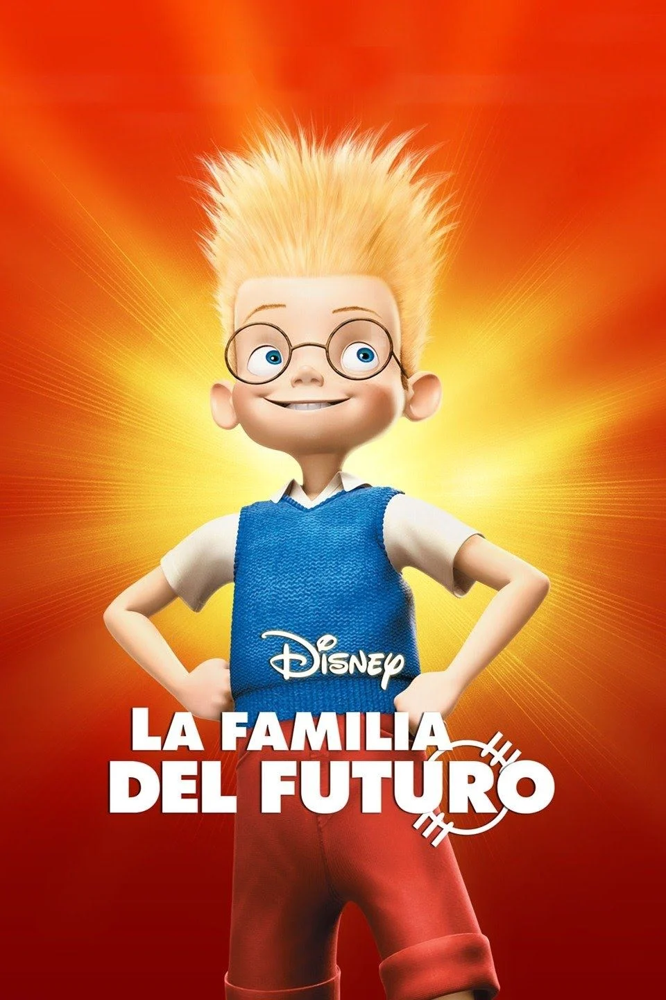
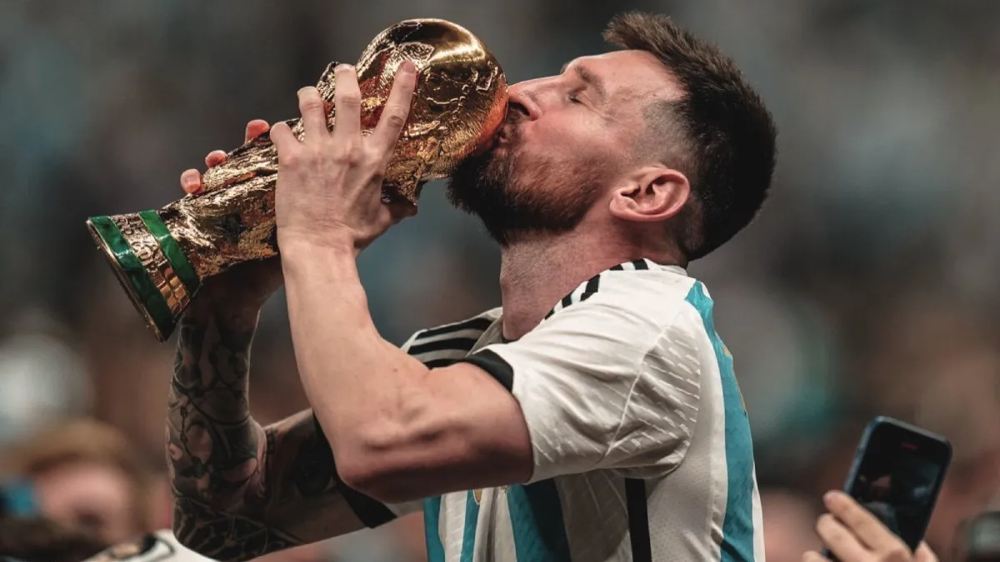
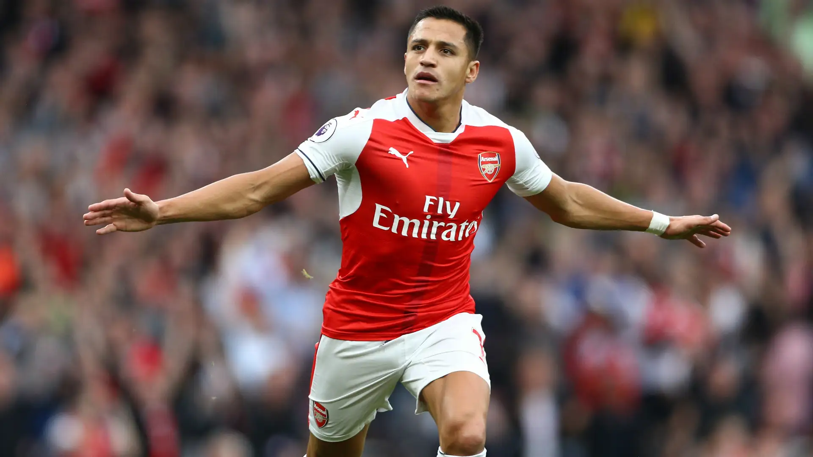

Messi me inspira por su humildad, su constancia y su capacidad para superar obstáculos sin perder la calma ni la pasión por el fútbol.

Neymar es mi favorito porque juega con alegría, creatividad y un estilo único que convierte cada partido en un espectáculo..
Alexis Sánchez me motiva por su garra, su entrega total y su historia de esfuerzo desde abajo hasta convertirse en un referente mundial..
